We're Getting Married!
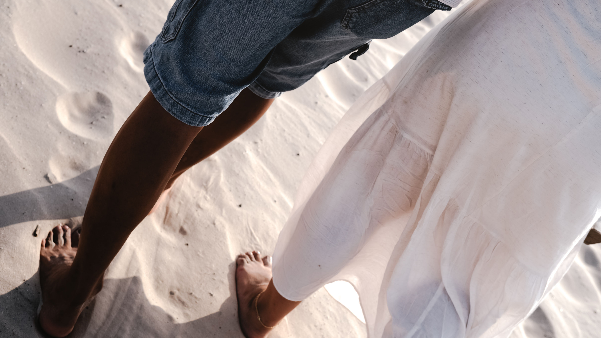
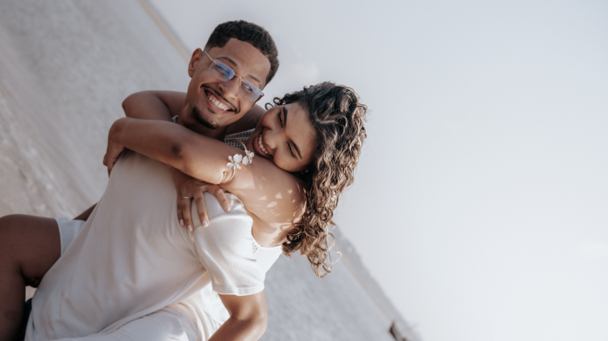
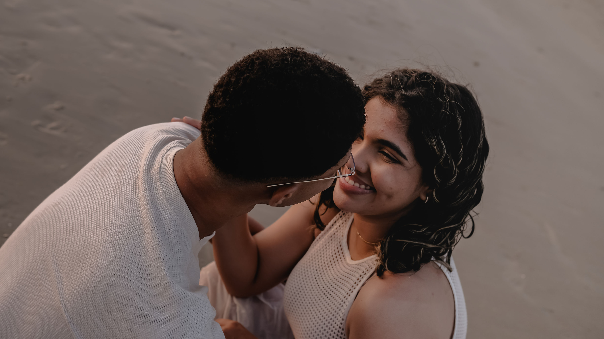
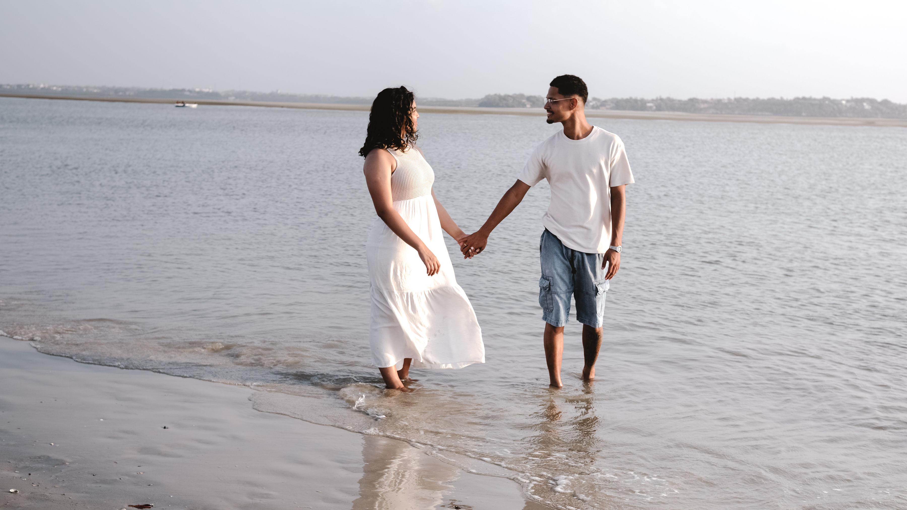
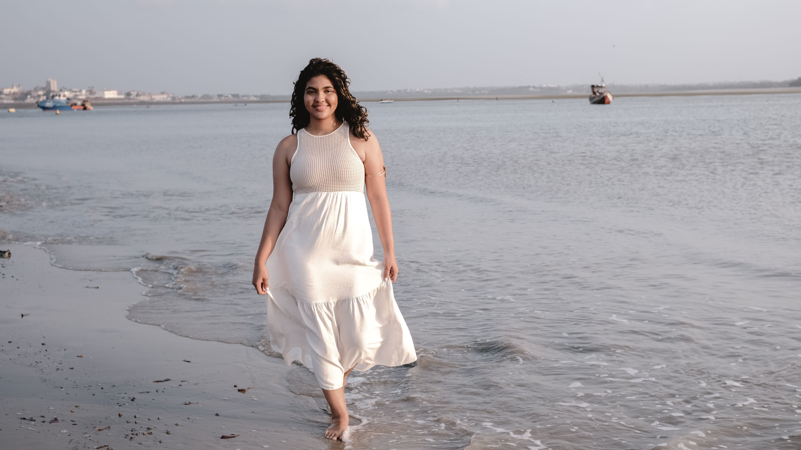
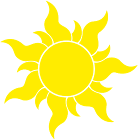
Nós nos vimos pela primeira vez durante o finalzinho da pandemia em um encontro do “GR”, ele tinha ido pela primeira vez com o irmão e coincidentemente se sentou ao meu lado e em um momento pediram para abrir a bíblia em uma passagem específica e ele estava com uma cara de confuso procurando e acabei me oferecendo para ajudar, depois disso fiquei encantada, até pensei “ ainda vou namorá-lo”, o Senhor sabia de tudo KAKAAKK. Nos vemos novamente depois de um tempo, no curso de libras da Get, ele e sua mãe estavam começando também e nos aproximamos depois de um bom tempo, depois de muitas competições nas aulas de Andrea e encontros no GR. Em um dia de dezembro de 2021 marcamos um cinema com alguns amigos, fomos assitir Homem Aranha: Sem volta para casa, sempre fui muito expressiva e vivia cada filme e isso foi uma das coisas que chamaram a atenção dele, depois de alguns dias trocamos contato e nos seguimos no Instagram, ele acabou postando um storie com vídeos de indireta e respondi, depois disso começamos a conversar frequentemente e nos tornamos amigos mais próximos, fui em seu batismo e foi algo muito marcante para nós, descobrimos vários interesses em comum e fomos nos apaixonando, até que no dia 02 de abril de 2022 começamos a namorar e agora em 13 de março de 2027 vamos nos casar !
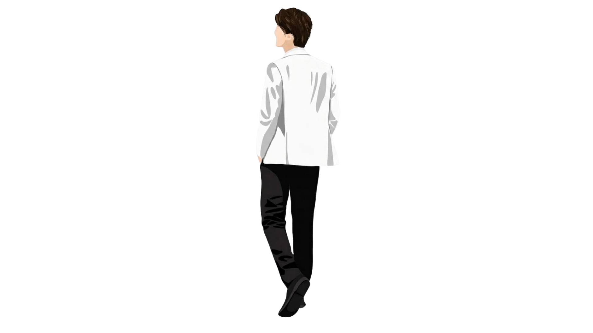
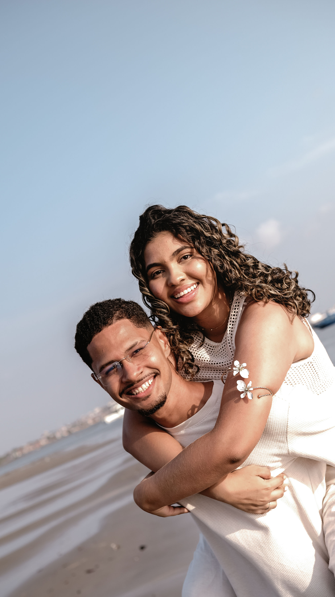
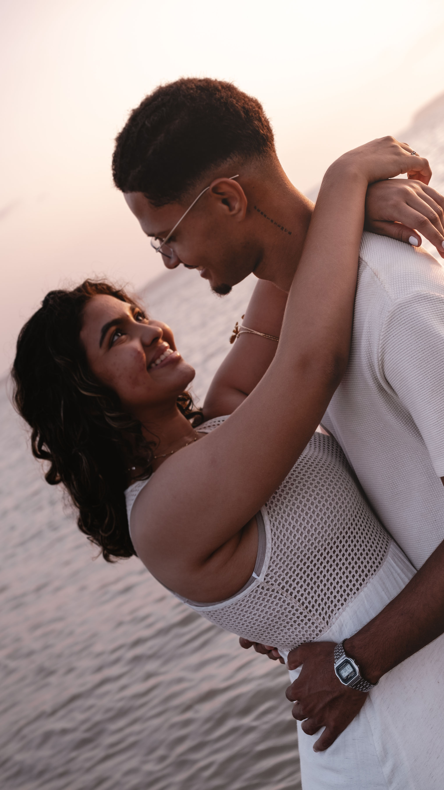
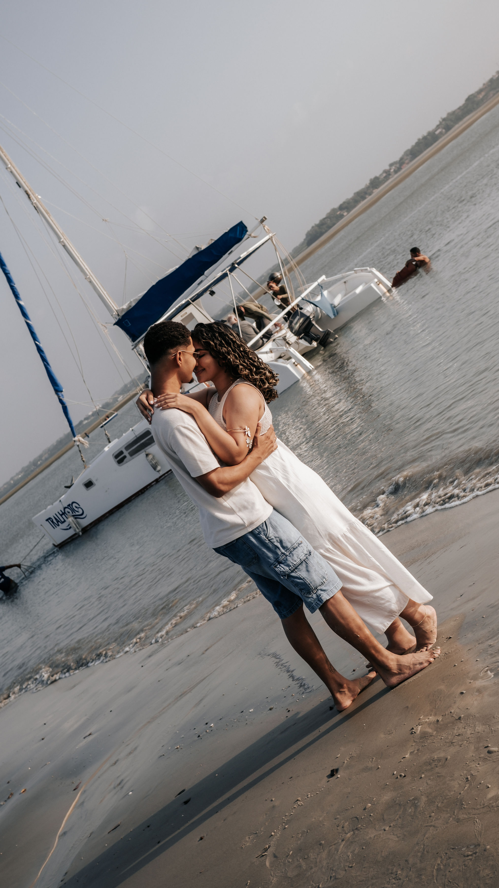
Nosso primeiro date foi assistindo uma série do neymar
nosso pedido de casamento foi ao som do filme preferido da noiva, enrolados, captado por nossos padrinhos kelly e thayllon
amamos ir ao cinema, principalmente para ver filmes de desenho animado
amamos ir em viagens missionárias juntos, principalmente quando estamos no infatil
gabriel ama praticar esportes, já mary prefere ficar em casa comendo um brigadeiro